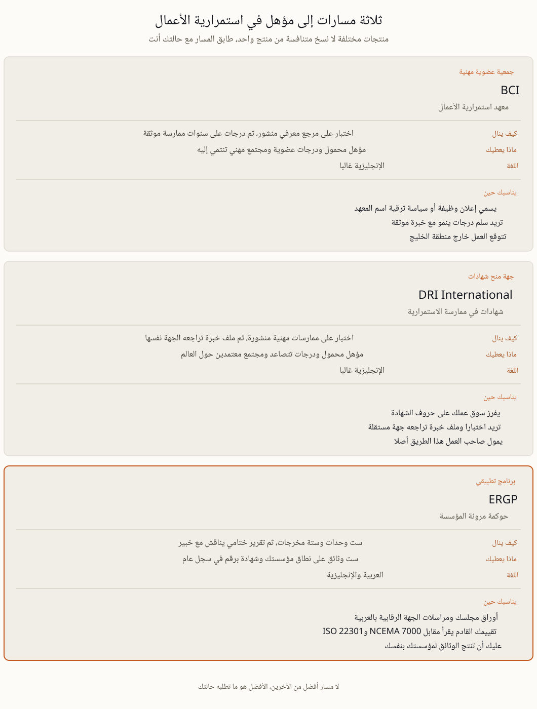

معهد استمرارية الأعمال BCI جمعية عضوية مهنية مقرها المملكة المتحدة. ينشر المعهد مرجعا معرفيا في استمرارية الأعمال، ويختبر المرشحين مقابله، ثم يقبلهم في درجات عضوية تتصاعد مع سنوات ممارسة يجري التحقق منها ومع تزكيات، ويحافظ الأعضاء على المؤهل عبر تطوير مهني مستمر، وللمعهد فروع وفعاليات في دول كثيرة. ومعهد DRI International مقره الولايات المتحدة ويعمل بمنطق مشابه عبر ممارساته المهنية المنشورة، اختبار تأهيلي ثم ملف خبرة تراجعه الجهة نفسها بدل أن تكتفي بما يدعيه المرشح، ثم درجات تتصاعد من المستوى الأول إلى المستويات العليا. والمعهدان راسخان منذ عقود، ومعترف بهما على نطاق واسع خارج بلديهما، ويحسن التحقق من أسماء الدرجات والرسوم ومحتوى المناهج على موقعيهما مباشرة لأنها تتغير.
أما ERGP فهو شيء مختلف في طبيعته. برنامج تطبيقي في حوكمة المرونة نقدمه نحن بوصفه خدمة معلوماتية استشارية لا عضوية في معهد. ست وحدات تقرأ بوتيرتك الخاصة، وتنتهي كل وحدة بوثيقة عمل لمؤسستك أنت، مع كتل أسئلة للمراجعة الذاتية عبر المادة، وتقرير ختامي عن شركتك يناقش مع خبير. والشهادة تحمل رقما فريدا مقيدا في سجل عام. المعهدان يشهدان للشخص مقابل مرجع معرفي مشترك ثم يبقيانه داخل مجتمع مهني، وERGP يمشي مع المدير في بناء النظام الذي سيفحصه مجلسه وجهته الرقابية.
في الجدول الصفات التي تغير القرار وحدها.
| BCI | DRI International | ERGP | |
|---|---|---|---|
| نوع الجهة | جمعية عضوية مهنية، المملكة المتحدة، بعمر عقود | جهة منح شهادات، الولايات المتحدة، بعمر عقود | برنامج تطبيقي من risk-place.org، 2026 |
| كيف ينال | اختبار على المرجع المعرفي المنشور ثم درجات على خبرة موثقة | اختبار على الممارسات المهنية ثم مراجعة ملف خبرة | ست وحدات وستة مخرجات وتقرير ختامي يناقش مع خبير |
| العضوية والدرجات | نعم، درجات ومجتمع أعضاء | نعم، درجات ومجتمع معتمدين | لا عضوية ولا درجات ولا فروع |
| اللغة | الإنجليزية غالبا، اسأل المعهد عن غيرها | الإنجليزية غالبا، اسأل الجهة عن غيرها | بالعربية كاملا وبالإنجليزية كاملا |
| الطبقة التنظيمية | ممارسات دولية عامة | ممارسات دولية عامة | NCEMA 7000 وتوقعات المصرف المركزي وISO 22301 كنظام واحد |
| ما يبقى معك | مؤهل محمول وسلم درجات | مؤهل محمول وسجل تطوير | ست وثائق على نطاق مؤسستك مع الشهادة |
| الاعتراف لدى جهات التوظيف | واسع ودولي | واسع ودولي | جديد، إقليمي أولا، وما زال يبنى |
| بقاء الصلاحية | تطوير مهني مستمر | تعليم مستمر | ثلاث سنوات وتجديد بدليل ممارسة |
هناك حالات يكون فيها مسار المعهد هو الشراء الأصوب بوضوح، وإخفاء ذلك يكلفك مالا ويسقط عنا أي حق في أن نكون مفيدين. اختره حين يسمي إعلان وظيفة أو كراسة مناقصة أو سياسة ترقية اسم المعهد أو حروفه، فقاعدة الفرز لا تناقش بل تستوفى. واختره حين تتوقع العمل في أكثر من بلد، لأن درجة المعهد عملة مشتركة بين أرباب عمل لم يسمعوا بأي مزود بعينه، وهي تسافر معك. واختره حين تريد سلما مهنيا لا دورة واحدة، فالدرجات التي تتصاعد مع خبرة موثقة تمنح مسارك بنية على مدى عشر سنوات لا يمنحها برنامج واحد. واختره حين يكون المجتمع المهني جزءا مما تشتريه، من فروع ومؤتمرات وأقران يراجعون تفكيرك ومرشدين. واختره حين يمول صاحب العمل هذا الطريق أصلا، فالمؤهل الذي تفهمه المؤسسة أسهل في الميزانية والتجديد.
بني ERGP لحالة أضيق. الفارق الأول هو اللغة، فالبرنامج كله موجود بالعربية، الوحدات الست والأسئلة والقوالب، لا ملخصا مترجما. وحين تكون أوراق مجلس الإدارة ومراسلات الجهة الرقابية ويوم عمل فريقك بالعربية، تتحول المادة إلى عمل أسرع بكثير. والفارق الثاني هو الطبقة التنظيمية، إذ يقرأ معيار AE/SCNS/NCEMA 7000 وتوقعات المرونة التشغيلية لدى المصرف المركزي ومعيار ISO 22301 بوصفها نظام إدارة واحدا لا ثلاث دورات منفصلة، وهذا ما يطلبه التقييم في المنطقة فعليا. والهيئة الوطنية لإدارة الطوارئ سياق تنظيمي ترسم المادة عليه، وهي لا تعتمد أي دورة تدريبية، ولا دورتنا نحن. والفارق الثالث هو ما يخرج معك، ست وثائق على نطاق مؤسستك أنت، من تحليل الأثر على الأعمال إلى تقرير لمجلس الإدارة، بدل شرائح عرض. والفارق الرابع هو قابلية التحقق، رقم فريد في سجل عام يفتحه صاحب العمل في ثوان. وتفاصيل الوحدات والمخرجات على صفحة برنامج ERGP.
والآن الوجه الآخر من الصفحة نفسها. ليس خلف ERGP عقود من التاريخ ولا معهد دولي، فلا فروع ولا سلم درجات ولا حروف تضاف بعد اسمك ولا مجتمع مهني تنتمي إليه مدى العمر. والاعتراف به إقليمي وما زال يبنى، فمسؤول التوظيف في لندن أو سنغافورة يعرف ماذا تعني حروف BCI وDRI ولا يعرف حروفنا بعد، وإذا كانت سيرتك الذاتية ستمر على فرز آلي في تلك الأسواق فهذه الحقيقة وحدها تحسم السؤال. والشهادة تصدر عن مزود خاص لا عن جمعية عضوية ولا عن جهة حكومية، فوزنها قائم على العمل الذي تسجله لا على اسم مؤسسة، ومكانها ملف الامتثال بوصفها سجل كفاءة لا ترخيصا. ونفضل أن تقرأ هذه الجمل هنا لا أن تكتشفها لاحقا. فإن كان السطر في السيرة الذاتية هو ما تحتاجه، فخذ مسار المعهد.

ترتيب هذه المسارات الثلاثة على مقياس واحد تسويق لا تحليل، لأنها تجيب أسئلة مختلفة. المعاهد تجيب كيف تعترف بك المهنة. وبرنامجنا يجيب هل تستطيع بناء النظام الذي ستفحصه الجهة الرقابية ومجلس الإدارة والدفاع عنه، وباللغة التي يجري بها الفحص. ومن يقول لك إن أحد المسارات الثلاثة أفضل ببساطة من الآخرين، ونحن منهم، فهو يبيع لا يقارن.
إن كان المسار التطبيقي هو ما تطلبه حالتك، فصفحة البرنامج تعرض الوحدات الست والمخرجات التي تبقى معك والسجل العام. اقرأها وقرر بنفسك.
تعرف على برنامج ERGP